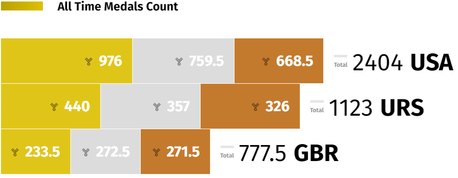
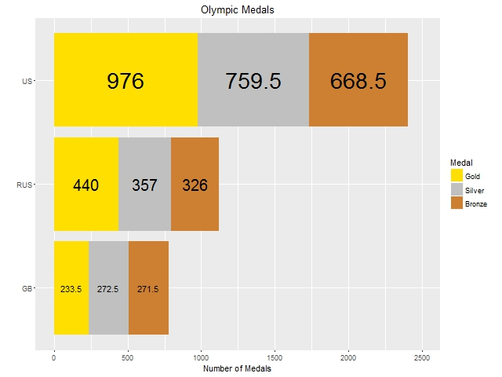

Worst. Plot. Ever.
Ah, the Olympics. They're back with the internet responding with equal parts excitement and cynicism. And also, apparently, the worst data visualization ever.

credit (or blame) goes to NBC
How have the 976 USA Olympic gold medals been given less length in the plot than all 777.5 of Great Britain's medals? Also, I learned today that you can get half a medal by tying for a placement.
Anyway, it's not that difficult to throw together a decent-looking, accurate plot. Is that so hard, NBC data visualization guy? To be fair, I don't know what kind of formatting issues he's dealing with when getting it on the website.

code on GitHub
There we go. Now we can clearly see 'Murica's domination in the medal count.